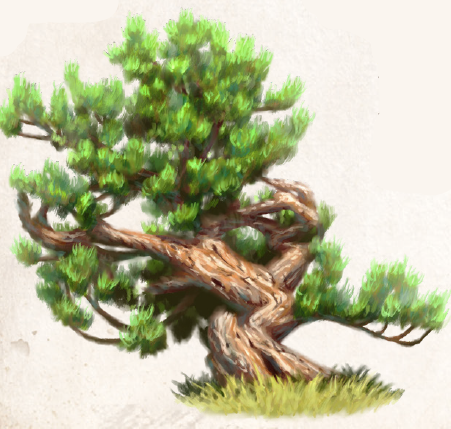

Die Existenz der Dornrose wird gemeinhin dem Moghulat Oron zugeschrieben, das während der Borbaradkriege in einem Teil Araniens bestand. Tatsächlich war die dämonisch veränderte Variante der tulamidischen Wildrose bereits zu Zeiten der Diamantenen Sultane bekannt. Damals wie heute verherrlicht die Dornoder Blutrose die Untugenden der Widersacherin Rahjas und wird von allen Kirchen gleichermaßen bekämpft. Außer in Frostperioden tragen Dornrosenbüsche tiefschwarze, von blutroten Adern durchzogene Blüten. Sie sind von einfacher, ungefüllter Gestalt und verströmen einen intensiven Duft, der sexuell erregend wirkt. Ihre langen, auffallend geraden Triebe bilden zahlreiche messerscharfe Stacheln aus, für die normale und sogar Lederkleidung kein nennenswertes Hindernis darstellt. Sie können - einzeln und als Strauß - sogar als Waffe eingesetzt werden.
Im Moghulat Oron wurde die Dornrose gezielt angepflanzt und weitergezüchtet. Die aus der Weiterzucht hervorgegangenen Sorten Oronia, Moghuli und Laraania waren bei den Mächtigen recht beliebt. Nutzbar sind alle in gleicher Weise: zum einen als gezielt gepflanzte Hindernisse, von denen der Dornrosenwall an der Grenze zum Mhaharanyat Aranien das bekannteste und größte war. Zum anderen wird aus den Bestandteilen der Pflanze durch Pressen und mehrfaches Destillieren ein schweres Parfüm mit dem Namen „Dornrosenöl“ gewonnen, das gleichermaßen die Fähigkeit im Betören verbessert wie enthemmend in Bezug auf Grausam- und Brünstigkeit wirkt. Sehr zum Verdruss der Rahjakirche, kommen Dornrosen auch nach der Auflösung Orons und trotz großer Anstrengungen weiter in den Radjaraten Elburien und Zorghana vor.
Verbreitung:
Landschaftstyp: Grasländer, Heiden und Steppen, Wälder
Regionen: Mittelländische Grasländer, Steppen und Wälder (yaquirisches Klima; eher selten), Südliche Grasländer und Steppen (gelegentlich, Aranien, insbesondere Radjarate Elburien und Zorghana - ehemaliges Oronisches Moghulat)
Suchschwierigkeit: -3
Bestimmungsschwierigkeit: -3
Anwendungen: 1/1/1/2/2/3
Wirkung:
Roh:
Berührung: Stacheln (1W3+1 TP)
Einatmung: giftig (Stufe 1, Wirkung: 1 Stufe Verwirrung, Dauer: 10 Minuten, nachdem der Duft mindestens 1 Minute lang eingeatmet wurde)
Verzehr: keine
Verarbeitet: siehe Rezepte
Preis: 3 / 5 Silbertaler
Rezepte:
Pflanzliche Rauschmittel: Dornrosenöl
Pflanzliche Hilfsmittel: Dornrosengerte
Elixiere: Tharvun-Parfüm
Alltagsarzneien und Volksbrauchtum: Wurde im Moghulat Oron zu Gerten geflochten und zur Demütigung der Sklaven verwendet.
Manche Aranier finden gelegentlich eine Dornrose in ihren Gärten und entscheiden sich unbedacht, einige Blütenblätter hinter ihr Ohr zu reiben, um die betörende Wirkung des Öls nutzen zu können.
Dies führt langfristig oft zur Sucht.
Böse Stimmen munkeln, die unter Araniern verbreitete Geste, sich das Haar elegant aus dem Nacken zu streifen - um einen Hauch des Öls um die Nase zu wehen - würde auf eine unterschätzte Abhängigkeit in der Bevölkerung hinweisen.
Haltbarkeit:
Roh: siehe Haltbarmachung